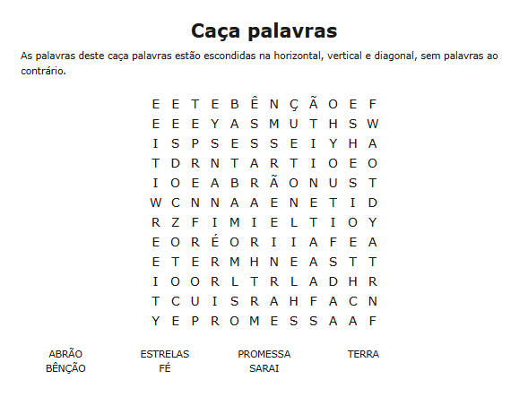
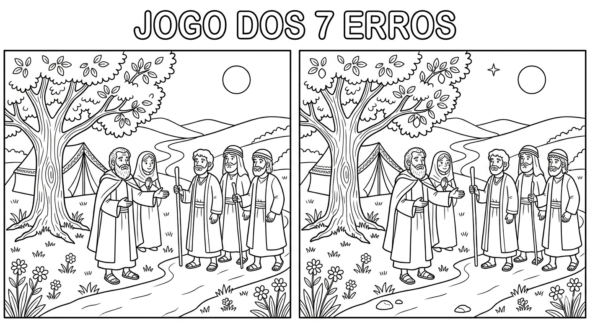

📖 30 Dias com Deus
Semana 3 – Abraão e a Promessa
Dia 15
"Sai da tua terra... vai para a terra que eu te mostrarei."
Gênesis 12:1
Deus chamou Abrão a deixar tudo e seguir para um lugar desconhecido. Abrão obedeceu, confiando totalmente em Deus.
🔍 Atividade: Caça-palavras
Encontre as palavras escondidas e marque-as na lista.

Dia 16
"Partiu, pois, Abrão, como o Senhor lhe tinha dito..."
Gênesis 12:4-5
Abrão não demorou. Reuniu sua esposa Sarai, seu sobrinho Ló, seus servos e rebanhos, e partiu.
🐪 Atividade: Desenhe a caravana
Desenhe camelos, tendas, pessoas e animais viajando pelo deserto. Não se esqueça de colocar Abrão guiando o grupo!
Dia 17
"Olha agora para os céus e conta as estrelas..."
Gênesis 15:5
Deus prometeu que a descendência de Abrão seria como as estrelas do céu. Mesmo sem um filho, ele creu.
⭐ Atividade: Conte as estrelas
Pinte cada estrelinha e depois conte quantas você coloriu. Escreva o número aqui: _________.

Dia 18
"Naquele mesmo dia fez o Senhor uma aliança com Abrão..."
Gênesis 15:18
Deus fez uma aliança eterna com Abraão. As promessas de Deus são fiéis e seguras.
🔎 Atividade: Jogo dos 7 erros
Compare as duas cenas e encontre as 7 diferenças. Depois, pinte o desenho!

📖 30 Dias com Deus
Semana 3 – Abraão e a Promessa
Dia 19
"...Sara, tua mulher, terá um filho."
Gênesis 18:10
Três visitantes celestiais confirmaram a promessa. Para Deus nada é impossível!
👼 Atividade: A visita dos anjos
Pinte a cena e escreva nos balões o que os visitantes disseram.

Dia 20
"E creu ele no Senhor..."
Gênesis 15:6
Abraão creu em Deus, e essa fé foi considerada justiça. A fé verdadeira nos conecta ao coração de Deus.
🤝 Atividade: Dinâmica da confiança
Com um familiar, faça um percurso de olhos fechados sendo guiado pela voz. Depois, escreva como foi confiar.
Dia 21
"Sara concebeu, e deu a Abraão um filho..."
Gênesis 21:1-2
Isaque nasceu! Seu nome significa "riso", pois trouxe alegria e provou que Deus é fiel.
👶 Atividade: O bebê da promessa
Pinte o bebê Isaque e decore o cobertor com símbolos da promessa (estrelas, corações).